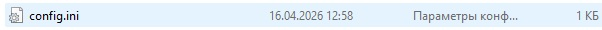
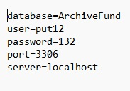

Для подключения приложения к серверу баз данных MySQL используется конфигурационный файл config.ini. Этот файл должен находиться в той же папке, что и исполняемый файл программы.

Рис. 1. Файл config.ini должен находиться в папке с программой
Структура файла config.ini

Рис. 2. Пример заполненного файла config.ini
Файл состоит из пар ключ=значение, каждая с новой строки. Доступны следующие параметры:
| Параметр | Значение по умолчанию | Описание |
|---|---|---|
| server | localhost | Адрес сервера MySQL (localhost, 127.0.0.1, IP-адрес или доменное имя). |
| port | 3306 | Порт для подключения к MySQL. |
| user | (пусто) | Имя пользователя MySQL. |
| password | (пусто) | Пароль пользователя MySQL. |
| database | ArchiveFund | Имя базы данных, с которой будет работать приложение. |
Пример заполнения:
Как работает поиск и проверка базы данных при запуске
При запуске программа выполняет следующие проверки:
1. Считывает параметры из файла config.ini. Если файл отсутствует — используются стандартные настройки (localhost, порт 3306, база ArchiveFund).
2. Проверяет существование базы данных с указанным именем.
3. Проверяет соответствие табличной структуры (наличие всех необходимых таблиц).
4. Если база данных не найдена или структура не соответствует — создаётся новая база из встроенного скрипта ArchiveFund.06.clear.sql. Старая база (при несовпадении структуры) сохраняется в резервную копию с отметкой времени.
5. Проверяет существование указанного пользователя MySQL. Если его нет — создаёт нового с необходимыми привилегиями.
Возможные ошибки подключения

Рис. 3. Сообщение об ошибке подключения к серверу
Если при запуске произошла ошибка подключения, программа предложит:
— «Отмена» — завершить работу приложения.
— «Повторить» — ещё раз попытаться подключиться.
— «Продолжить» — продолжить работу с настройками по умолчанию (может привести к нестабильной работе).